Organic Farm Tour
Our Organic Farm has started giving visitors the great opportunity to spend half a day in the core of its activities. Indeed, we have opened our farm for visits in order to show our guests how organic farming really happens. We are very happy and proud to guide our visitors during this discovery offering a glimpse of the diversity of local organic agriculture on our land. Our farmers are pleased to share their farming knowledge and the day to day operation and challenges of farming organically. During the visit, you will have the opportunity to see all our crops and farm-related activities, and you will be able to harvest vegetables yourself. The collected money is supportive and fully reinjected in our farming activities. For those of our visitors who are not much in touch with farming, we hope that this escapade will be an opportunity to raise your understanding of what farming represents and how sacred growing food is. Reconnecting to nature is to us something essential that a lot of people need in our modern society. If you are inclined to that reconnection, we hope to support you in it. The farm tour provides interactive farm experiences, supports local economy and introduces individuals of all ages to the many faces of organic agriculture.
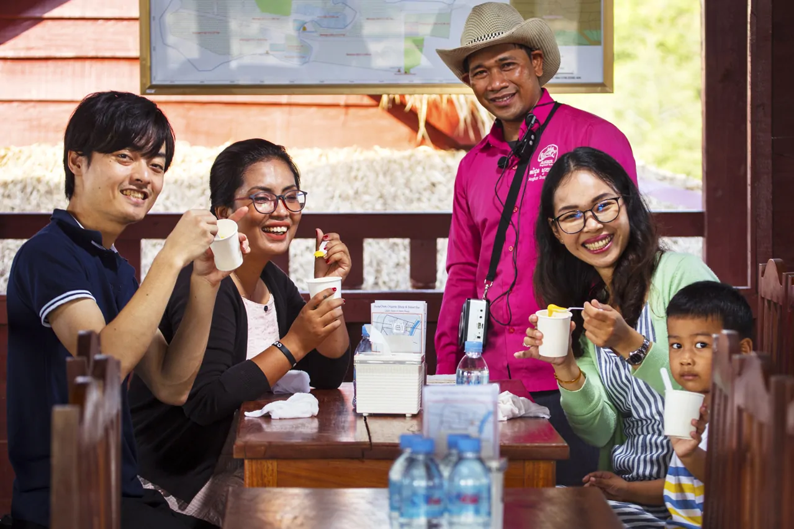Tour Highlight Pictures

 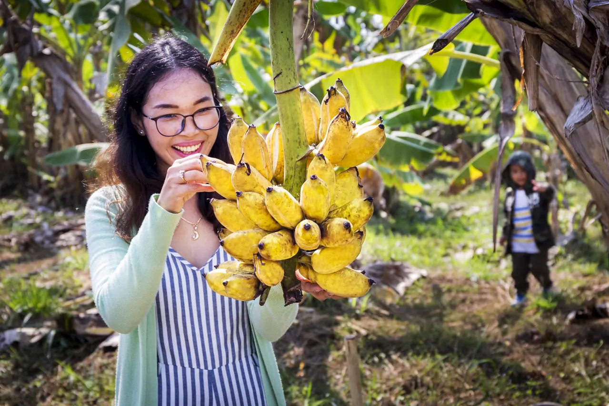
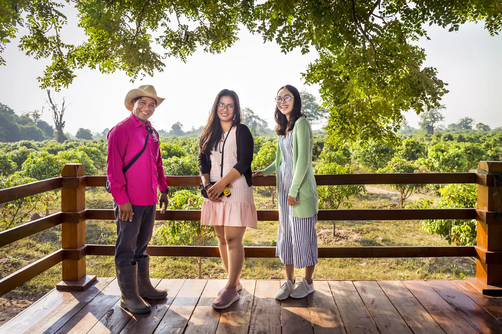
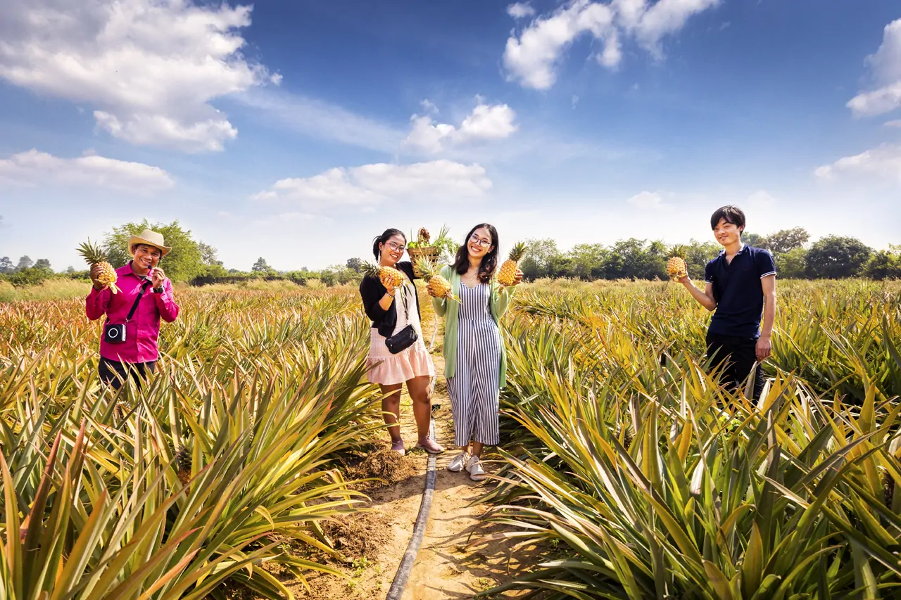
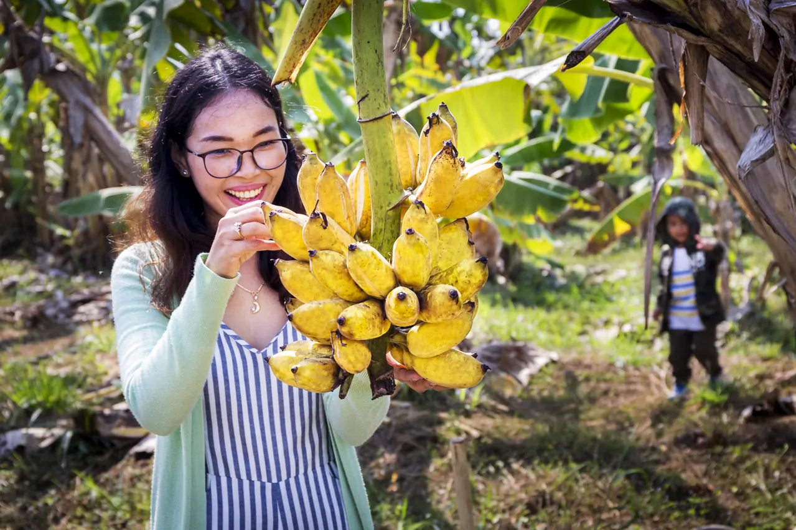
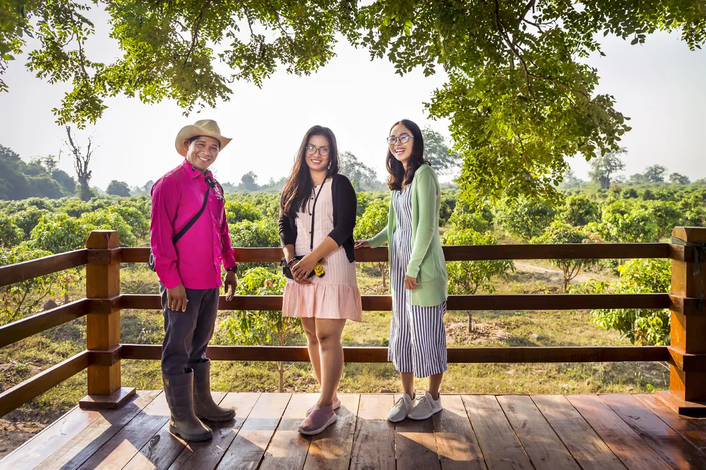
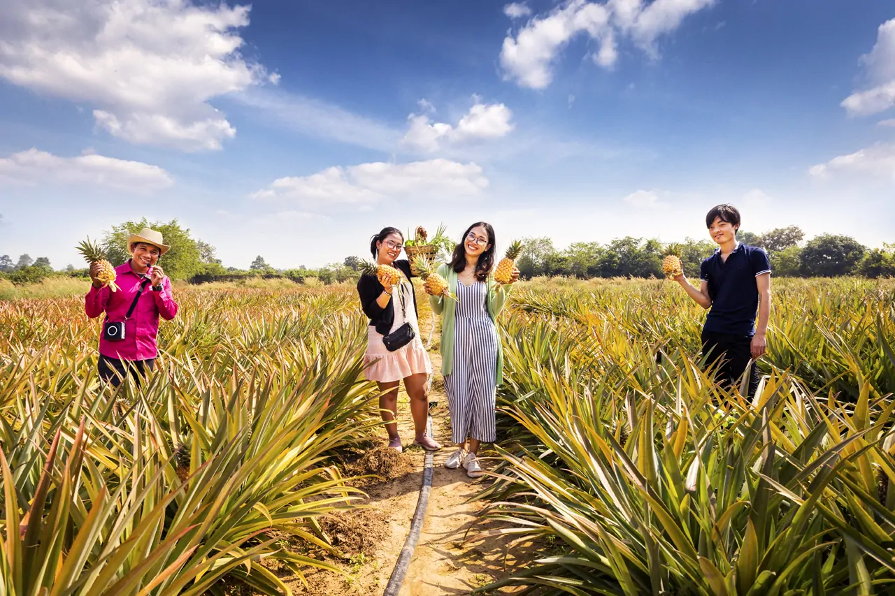
 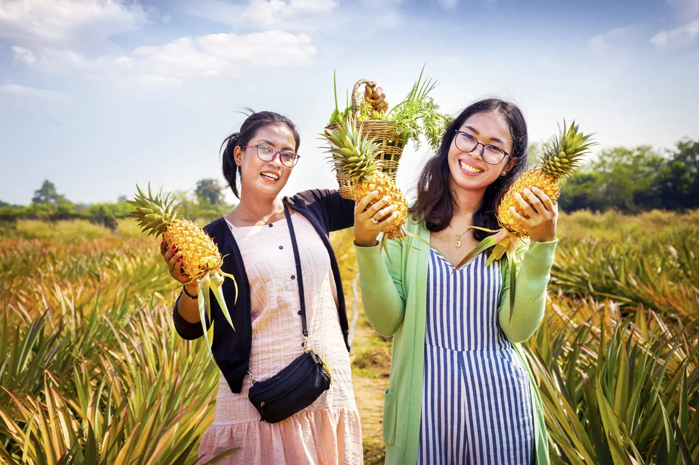
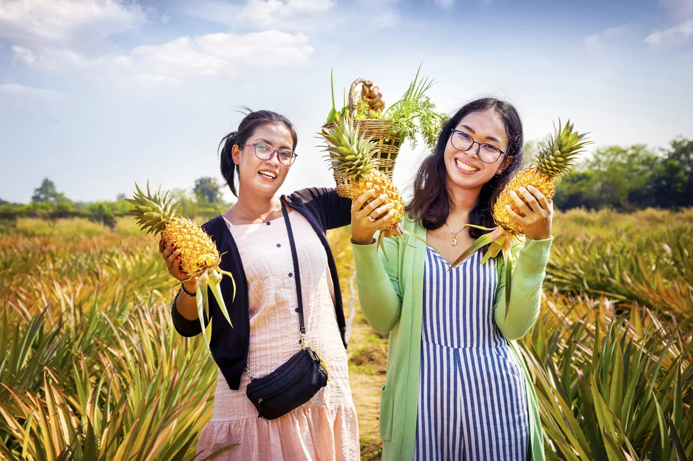

 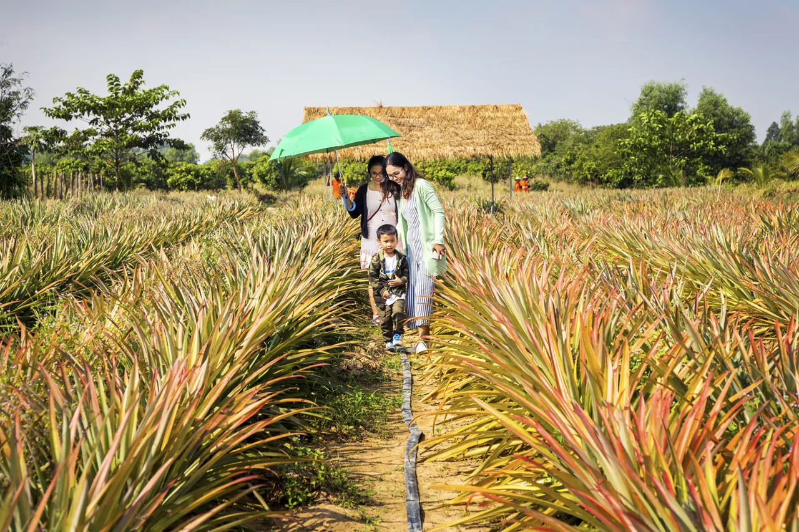
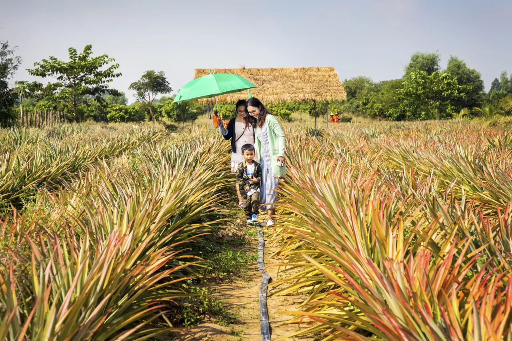

 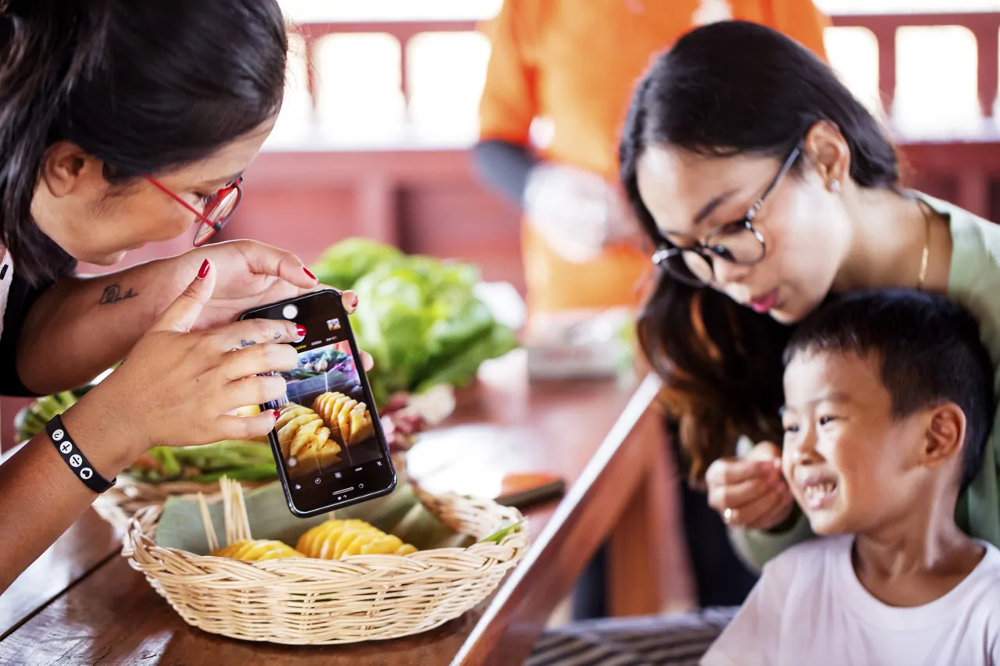
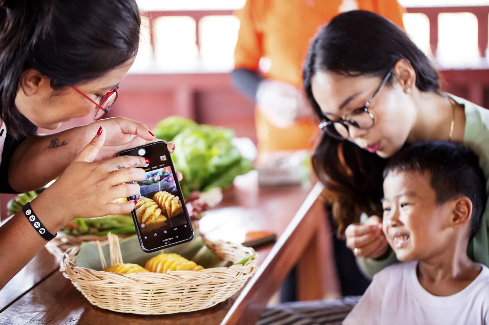
 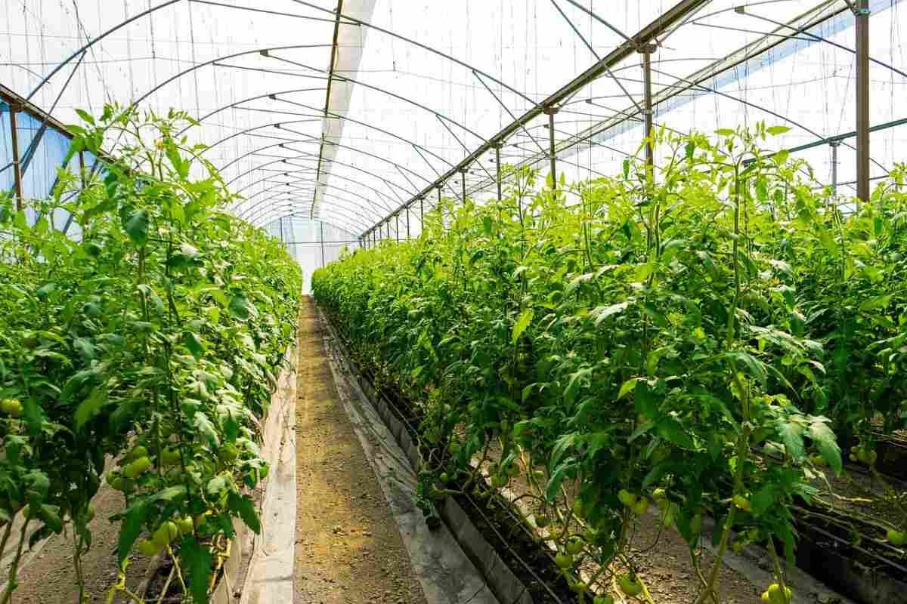
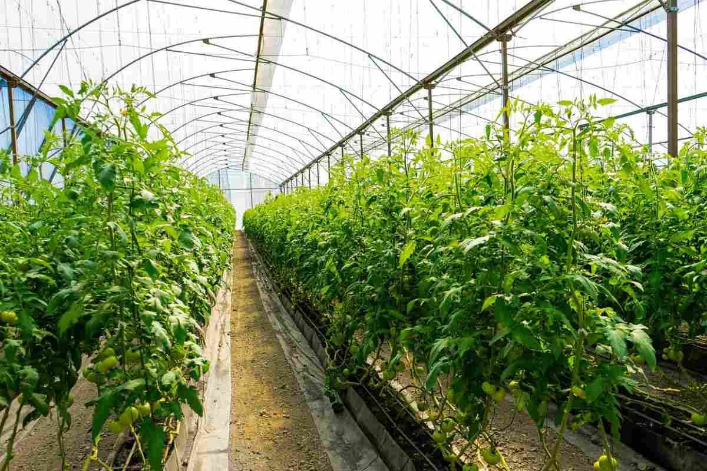